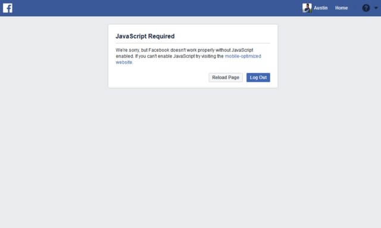
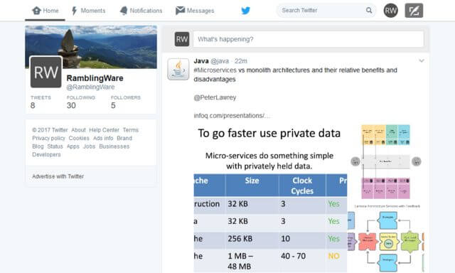
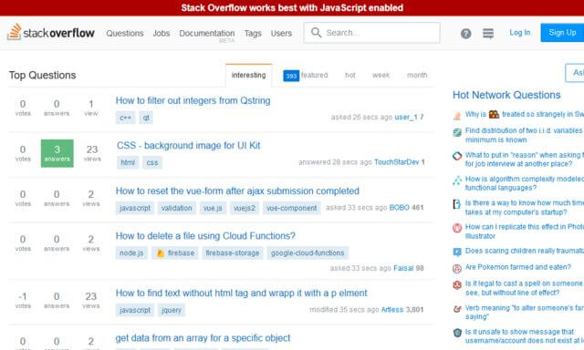
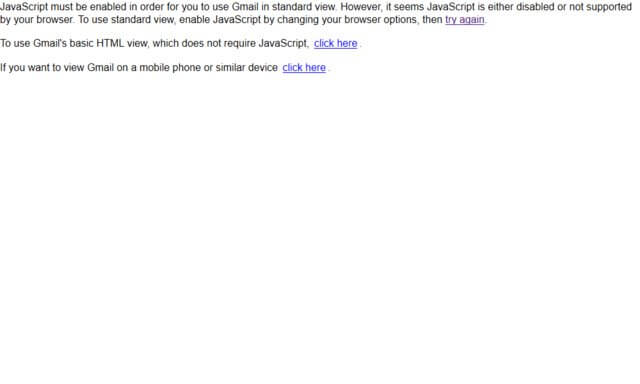

JavaScript Dependent Websites
( 8 min read )
I want to start a new series where I highlight some popular websites that require JavaScript. This will be my first entry on this topic, so the formatting may change a bit in future posts. For now, I want to show off a few sites, in no particular order, that depend on JavaScript (JS) to perform their basic function: Display. I’m also going to include a few that do not require JS.
Wait… What’s JavaScript?
JS is a runtime language in your browser. Along with HTML and CSS; these make up the three core technologies in the World Wide Web. JS mainly used to add some spizzazz to popular websites, like audio, video, animations, or even validate input for forms.
What are you doing?
I’m using Firefox with a plugin called QuickJS to toggle on/off JS and take a screenshot.
Why? Isn’t this kinda stupid?
Well, a website is like a cake. It has layers, ingredients, flavors, and more, all put together. HTML would be the cake base or structure. CSS would be the frosting, creme, fondant, and sprinkles. And finally, JS would be the candles.
If you take away the candles, is it still a cake? Yeah sure.
What about the frosting, creme, or cake batter? If you take that away would it still technically be a cake? Not really. You’d either have a pile of frosting with candles on it, or candles on cake batter without any filling. Gross.
Same goes for websites. If you take away each piece individually, its not so great of an experience. However, without candles (JS) I still think the basic experience should still be fine. After all, you blow out the candles before you eat the cake anyway. If your site makes use of JS, that’s fine. Just make sure you have an alternate plan for users without it. Not all browsers support JS, and an increasing number of users are disabling it for security purposes.
So without further ado, here are some popular websites, loaded with JS disabled.

Facebook fails to load, but warns you, and gives a few options as well.

Twitter loads up fine. But you can’t tweet, retweet, or like, anything. It also only seems to load 2 posts on the home page, and stops loading more. I’m not sure if this is better or worse than Facebook’s method of no access at all, than Twitter’s partial access viewing.
Loading gif loaded. But nothing much else. At least offer a warning or error, if JavaScript is disabled. Anything is better than just infinite loading gif.
American Express
Ok now we got something. Links work. Not as many images, but icons loaded fine. Even a little warning box to the left. I’d say nicely done American Express.
Comcast - Xfinity
Loads just fine. Although, after closer inspection the menus don’t drop down, and some blue buttons loop back to this page. But some others work. Alright Comcast, I was pleasantly surprised this mostly worked.
Allstate
Wow… I got nothing but a blank page from Allstate.com. This is terrible.
Stack Overflow

There is a big red banner across the top of the page, but everything else loaded fine. At first, I didn’t even notice the banner because my eyes immediately looked at the content of the page. The message also reads “Stack Overflow works best with JavaScript enabled”. Its a suggestion, not a requirement. Nice job SO.
BBC
The page loads blurry images. Probably compressed or “mini” images at first, then probably uses JavaScript to load the higher-def pictures later. I’m guessing BBC went with this technique to load the page quicker and just show something to the user while they wait for their pretty pictures to load. I think that’s cool, but it sure does look horrible without JavaScript. Also the “Menu” button is not a menu, but jumps you down to the footer of the page, where there is a partial link list of other pages.
Here is the BBC with JavaScript enabled. Its much better looking. But also notice that the drop-down menu was replaced with menu tabs of Sports, Weather, Travel, etc. So there are some missing navigation links without JavaScript enabled. That’s not good.
Gmail

Gmail… You look so old! Without JavaScript, you get some text and links without CSS-styling. They do inform you that JS is required, and offer a non-JS version of Gmail for you to load. But I think it should be automatically redirected. This is similar to Facebook’s error message. Just uglier.
ProtonMail
This is the inbox page of ProtonMail. It simply fails to load. Its loading gif is pretty eye catching though. But it simply spins forever. This is arguably not a popular website yet, but I wanted to at least compare it to Gmail since I ditched Gmail 2 years ago. ProtonMail is still being expanded upon, so I get why it doesn’t fail graciously. But adding a <noscript> tag is very easy to do! Come on!
Upon further inspection, the page does contain a <noscript> tag. Its just being covered up by the fancy loading gif.
<!--- No Script message --->
<div id="loading_pm">
<noscript style="padding: 2rem; display:block; text-align: center; color: #fff">
ProtonMail requires Javascript. Enable Javascript and reload this page to continue.
</noscript>
</div>A <noscript> tag will display only if JavaScript is disabled. Its the best way to let users know about your website’s JavaScript dependence in order to do a simple function…. display the damn page.
And that’s it for now!
You can give me a few suggestions to try next, or try some out yourself by disabling JavaScript in your web browser.
It shows which companies actually spend time testing their websites in QA for bugs or issues. JavaScript shouldn’t be required or even assumed to be working. If you have a website that depends on it, at least give a warning with <noscript>!
Published: Apr 26, 2017
Category: observations